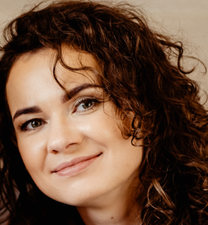

Katarzyna Ziemba

Summary
I am a chemist by profession who would like to try my hand at programming. Programming is a passionate activity for me, which unfortunately at the moment is limited by my current job and family. I would like to be able to start working in this profession to fully develop myself.
Education
- Bachelor's degree in chemistry, Nicolaus Copernicus University in Toruń (10.2019 - 06.2022)
- Master's degree in chemistry, Nicolaus Copernicus University in Toruń (10.2022 - 06.2024)
- Cours "Przyszły Programista" (10.2019 - until now)
Work experience
- Implementation Specialist, Biofaktor, Gorzów Wielkopolski (08.2014 - 06.2016)
- Qualification Specialist, Mabion, Łódź (07.2016 - 09.2016)
- Analytical Methods Specialist, Blirt S.A., Gdańsk (10.2016 - 06.2019)
- Junior Qualification Specialist, Polpharma Biologics S.A., Gdańsk (07.2019 - 03.2020)
- Qualification Specialist, Polpharma Biologics S.A., Gdańsk (04.2020 - 03.2022)
- Senior Qualification Specialist, Polpharma Biologics S.A., Gdańsk (04.2023 - until now)
Skills
- Hard skills
- C++
- C object oriented
- HTML
- GIT
- Soft skills
- Communication
- Problem Solving
- Team Collaboration
- Responsibility
- Involvement
Certificates
{kind=link}
{kind=link}
{kind=link}